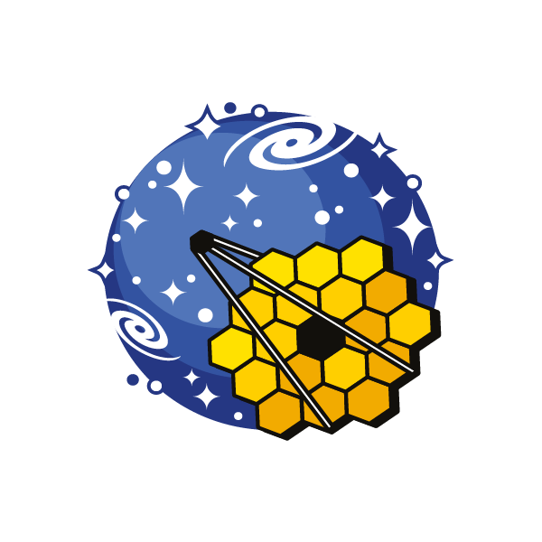

Projects & Collaborations
To achive our scientific goals, we have also been working in a large variety of international collabrations.
- JWST Projects -

CEERS
PI: S. Finkelstein
Cosmic Evolution Early Release Science Survey: Mapping the formation and evolution of galaxies with JWST NIRCam/NIRSpec.
NGDEEP
PIs: S. Finkelstein, C. Papovich, N. Pirzkal
Next Generation Deep Extragalactic Exploratory Public survey with JWST NIRCam.
- ALMA Projects -
ALPINE
PI: Andreas Faisst
ALMA Large Program to Investigate [CII] at Early times. A survey of dust and gas in distant galaxies.
CRISTAL
PI: John Smith
[CII] Resolved ISM in Star-forming galaxies with ALMA. Spatially resolved study of gas at high redshift.